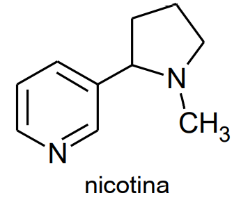
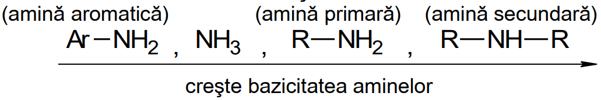

Definiție: Aminele sunt compuși organici, care conțin în moleculă gruparea funcțională amino (—NH2) sau amino substituită (—NHR, —NR2).
Aminele pot fi considerate derivați ai amoniacului (NH3-), în care atomii de hidrogen sunt înlocuiți cu radicali organici.
Clasificare:
Nicotina este un excitant al sistemului nervos. Ea apare în multe plante (de ex. legume), dar este reținută în organism numai din fumul de țigară. Reținerea ei în organism determină în timp bolu canceroase și cardiovasculare.
În cazul în care pe un radical hidrocarbonizat se află și alte funcțiuni organic, cele oxigenate (—COOH > >C=O > —OH) au prioritate la denumire față de funcțiunea monovalentă amino, de exemplu denumirea următoarei substanțe va fi: H2N—CH2—CH2—OH 2-aminoetanol (NU 2-hidroxietolamina).
Aminele primare, secundare și terțiare cu aceeași formulă moleculară sunt izomeri.
Aminele pot prezenta următoarele tipuri de izomerie:
Hidrogenul se obține din reacția unui metal activ (Zn, Fe, Sn) cu acidul clorhidric : Fe + 2HCl → FeCl2 + 2[H]
Observație: dacă în reacția (1) amoniacul este în exces, reacția se oprește în faza de monoalchilare, rezultând amina primară, iar dacă compusul halogenat este în exces, reacția continuă până la obținerea halogenurii cuaternare de amoniu.
La temperatură obișnuită aminele inferioare sunt substanțe gazoase, cu miros asemănător amoniacului, cele superioare sunt solide, iar aminele intermediare sunt lichide și au miros neplăcut, de pește stricat.
Punctele de fierbere cresc cu mărimea catenei și cu numărul de grupe amino din moleculă. Pentru aminele izomere, punctele de fierbere cresc în ordinea: amina terțiară < amina secundară < amina primară.
Aminele primare și cele secundare sunt asociate pentru legături de hidrogen. Aminele formează legături de hidrogen și cu moleculele de apă, dar numai aminele inferioare sunt solubile în apă. Solubilitatea aminelor în apă scade cu creșterea radicalului hidrocarbonat. Aminele aromatice sunt parțiar solubile în apă (de ex. soluția saturată de anilină are concentrația de 3,4%).
Anilina doar proaspăt preparată este un lichior incolor. În timp însă din cauza oxidării cu aerul se colorează în galben sau galben-brun.
Proprietățile chimice ale aminelor se datorează grupei / grupelor funcționale amino –NH2 din moleculele lor.
Aminele au caracter bazic datorită perechii de electroni neparticipante a atomului de azot care poate lega coordinativ un proton.
La dizolvarea în apă, aminele solubile ionizează:
Aminele reacționează cu acizii minerali (HCl, H2SO4) primind ușor protonii cedați de acizi și formează săruri de amoniu (substanțe ionice), solubile în apă.
Bazicitatea aminelor crește în ordinea:
Aminele aromatice, datorită caracterului bazic mai scăzut au și o solubilitate mai mică în apă.
Aminele se pot obține din halogenurile de amoniu cu baze tari.
Aminele primare, secundare și terțiare se alchilează cu derivați halogenați.
Aminele primare și secundare reacționează ușor cu halogenurile acizilor carboxilici și anhidridele acizilor carboxilici, formând amine acilate. Reacția poate avea loc și cu acizi carboxilici, dar numai în condiții energice. Aminele terțiare nu pot fi acilate, deoarece nu au atom de hidrogen legat de atomul de azot. Atomul sau atomii de hidrogen de la grupa amino sunt substituiți cu grupa R – CO – (acil), unde R poate fi aromatic sau alifatic. Prin acilare aminele își pierd caracterul bazic. Aminele acilate sunt amide substituite la azot.
Aminele primare pot fi acilate în două trepte cu exces de reactant (clorură acidă sau anhidridă).
Aminele acilate hidrolizează ușor regenerând amina.

Prin acilarea aminelor se protejează adesea grupa amino față de reactanții care pot modifica sau distruge această grupă. Acilarea (protejarea grupei amino) se aplică întotdeauna înainte de oxidare, clorurare, nitrare, etc.
Aminele primare alifatice tratate cu acid azotos formează alcooli:
Aminele aromatice de tipul anilinei pot da și reacții de substituție la nucleu sau în funcție de reactantul folosit, reacții de oxidare.
Prin încălzirea anilinei cu acid sulfuric concentrat la 1800C, se obține acidul p-anilinsulfonic sau acidul sulfanilic:

La tratarea anilinei cu acid sulfuric la rece se formează sulfatul de anilină H5C6–NH3]+HSO4− (prin reacție de neutralizare), dar acesta prin încălzire la 1800C formează acidul sulfanilic sau acid p-anilinsulfonic, printr-o reacție de transpoziție.
Anilina se bromurează ușor la nucleu.
Aminele primare aromatice în reacție cu acidul azotos, la temperaturi sub 50C, formează săruri de diazoniu.
Observație: acidul azotos se obține în mediul de reacție din azotit de sodiu și un acid mineral (de obicei se lucrează cu HCl în exces). Sărurile de aren diazoniu sunt în marea majoritate solubile în apă și sunt stabile numai în soluții apoase la temperaturi scăzute (0 - 50C). În stare solidă sau prin concentrare sărurile de diazoniu explodează.
În funcție de reacția utilizată, grupa diazo poate fi distrusă sau conservată. Distrugerea se poate face prin reacția cu KI, CuCN, H2O (la 500C):
Conservarea grupe diazo se face prin cuplare (adesea pentru obținerea coloranților). Sărurile de arendiazoniu dau reacții de cuplare la rece (0-50C) cu amine aromatice sau cu fenoli.
Aminele aromatice dau reacția de cuplare în poziția para față de grupa amino:
Fenolii dau reacția de cuplare în poziția para față de grupa hidroxil, iar dacă aceasta este ocupată, reacția este orientată în poziția orto față de hidroxil.
Metiloranjul se obține prin diazotarea acidului sulfanilic și cuplarea cu fenildimetilamina. Metiloranjul este un indicator acido-bazic. În mediul bazic are culoare galbenă, iar în mediu acid este roșu. Domeniul de viraj apare în intervalul de pH 3,2-4,4.